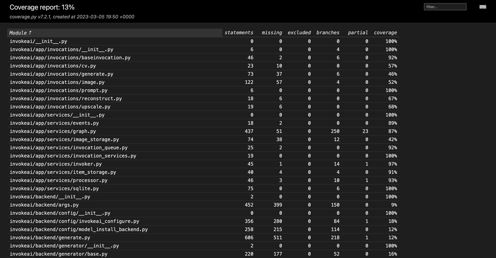
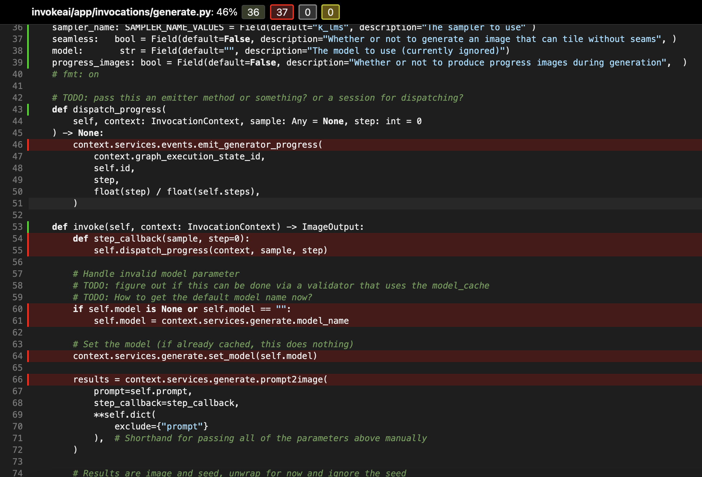

InvokeAI Backend Tests#
We use pytest to run the backend python tests. (See pyproject.toml for the default pytest options.)
Fast vs. Slow#
All tests are categorized as either 'fast' (no test annotation) or 'slow' (annotated with the @pytest.mark.slow decorator).
'Fast' tests are run to validate every PR, and are fast enough that they can be run routinely during development.
'Slow' tests are currently only run manually on an ad-hoc basis. In the future, they may be automated to run nightly. Most developers are only expected to run the 'slow' tests that directly relate to the feature(s) that they are working on.
As a rule of thumb, tests should be marked as 'slow' if there is a chance that they take >1s (e.g. on a CPU-only machine with slow internet connection). Common examples of slow tests are tests that depend on downloading a model, or running model inference.
Running Tests#
Below are some common test commands:
# Run the fast tests. (This implicitly uses the configured default option: `-m "not slow"`.)
pytest tests/
# Equivalent command to run the fast tests.
pytest tests/ -m "not slow"
# Run the slow tests.
pytest tests/ -m "slow"
# Run the slow tests from a specific file.
pytest tests/path/to/slow_test.py -m "slow"
# Run all tests (fast and slow).
pytest tests -m ""
Test Organization#
All backend tests are in the tests/ directory. This directory mirrors the organization of the invokeai/ directory. For example, tests for invokeai/model_management/model_manager.py would be found in tests/model_management/test_model_manager.py.
TODO: The above statement is aspirational. A re-organization of legacy tests is required to make it true.
Tests that depend on models#
There are a few things to keep in mind when adding tests that depend on models.
- If a required model is not already present, it should automatically be downloaded as part of the test setup.
- If a model is already downloaded, it should not be re-downloaded unnecessarily.
- Take reasonable care to keep the total number of models required for the tests low. Whenever possible, re-use models that are already required for other tests. If you are adding a new model, consider including a comment to explain why it is required/unique.
There are several utilities to help with model setup for tests. Here is a sample test that depends on a model:
import pytest
import torch
from invokeai.backend.model_management.models.base import BaseModelType, ModelType
from invokeai.backend.util.test_utils import install_and_load_model
@pytest.mark.slow
def test_model(model_installer, torch_device):
model_info = install_and_load_model(
model_installer=model_installer,
model_path_id_or_url="HF/dummy_model_id",
model_name="dummy_model",
base_model=BaseModelType.StableDiffusion1,
model_type=ModelType.Dummy,
)
dummy_input = build_dummy_input(torch_device)
with torch.no_grad(), model_info as model:
model.to(torch_device, dtype=torch.float32)
output = model(dummy_input)
# Validate output...
Test Coverage#
To review test coverage, append --cov to your pytest command:
Test outcomes and coverage will be reported in the terminal. In addition, a more detailed report is created in both XML and HTML format in the ./coverage folder. The HTML output is particularly helpful in identifying untested statements where coverage should be improved. The HTML report can be viewed by opening ./coverage/html/index.html.
HTML coverage report output

